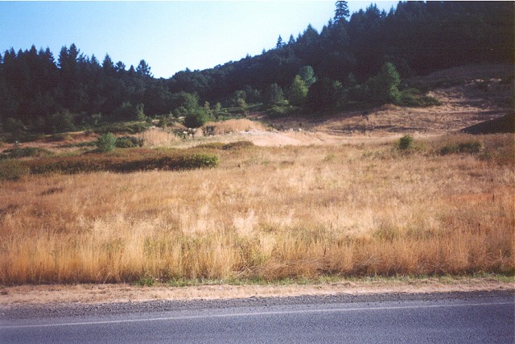
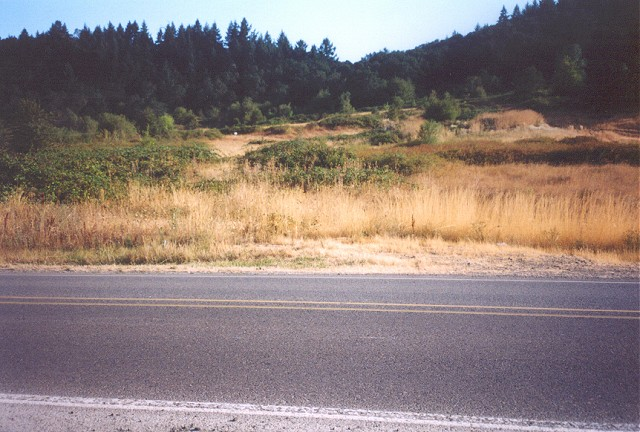
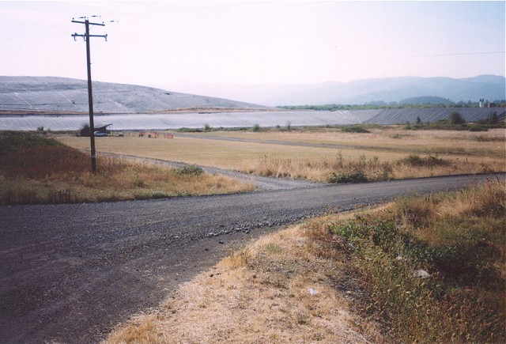
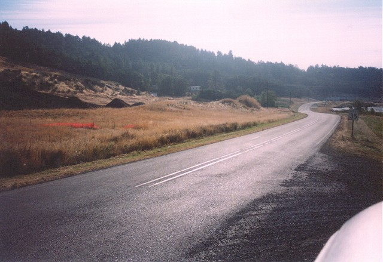
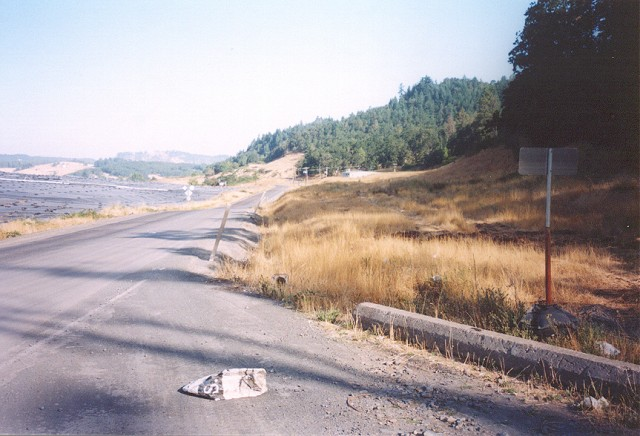
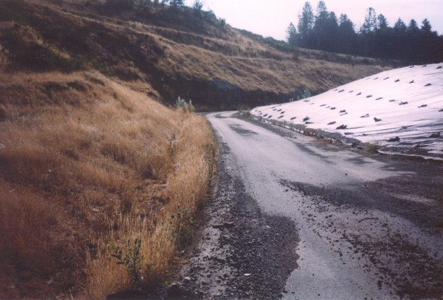
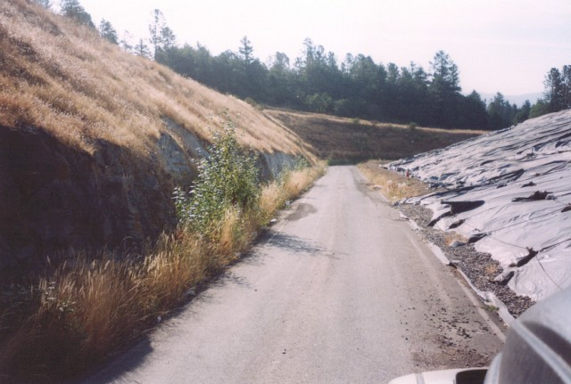
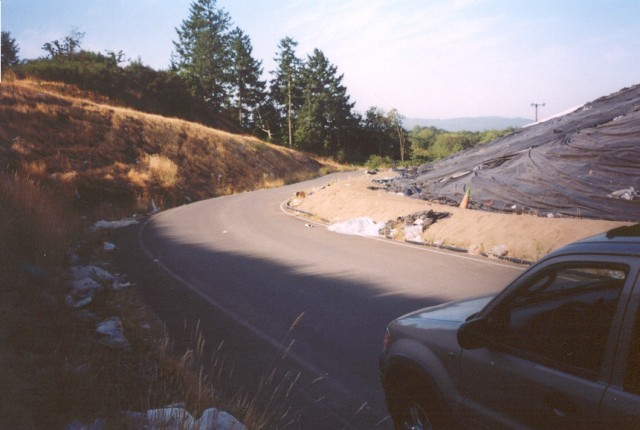

Numbers on the map represent the location where the photographs were taken. Scroll down to view the photographs.
Oregon International Raceway - Backstretch and Final Corners
|| Contents || Front Stretch | Turns 1, 2 & Infield Loop | Backstretch and Final Corners || Home ||
Numbers on the map represent the location where the photographs were taken. Scroll
down to view the photographs.
Return to racingcircuits.net's Photo Archive Main Index

16 - Looking north towards the area where the back straight/long right
hander began.

17 - This is where the first of 2 right handers were that lead onto the
back straight. Between the bushes left of center in the photo is where I believe the short
straight between the 2 turns was located. You can see evidence of it on the aerial photo but there was little at ground level.

18 - Is about 180 degrees from photo 17. The far piece of road being the
straight shown in photo 13, the near road being a newer access road for the R/C airplane
club, and the right hand curve nearest being the rest of the left hand turn shown in photo
12 that was never part of the track.

19 - Looking opposite of racing direction to the exit of the long left
hander shown in photo 15. This would have been approaching the right hander shown in photo
17.

20 - Looking back towards the exit of the turn shown in photo 15. It's
somewhere back there on the left but I can't quite make it out. This photo shows what I
beleive to be the point where the long gone back stretch meets up with still existing
track layout. I think it would have come from around the edge of the hill on the right
side of the photo.

21 - Downhill coming out of a left hander and approaching a right hander
with a rock wall on the outside of the turn.

22 - Short straight between right hand turns.

23 - Right hand turn at far East end of track. Leading somewhere back onto
the start finish straight.
| << PREVIOUS PAGE |
Photographs and Text ©Brian Parker. Reproduced here with kind permission.